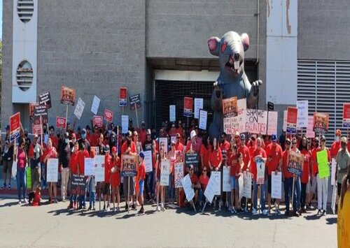
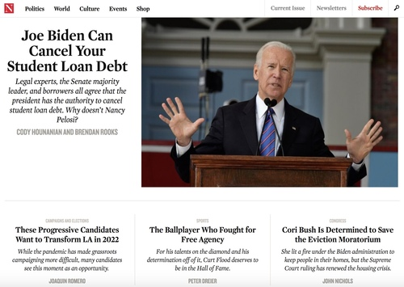
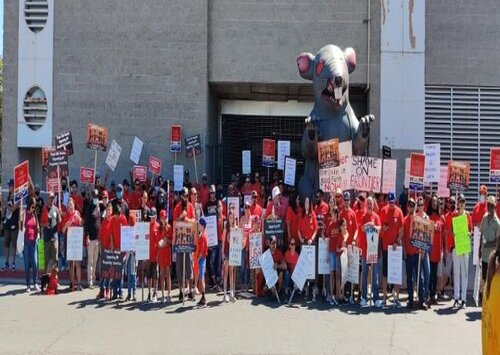
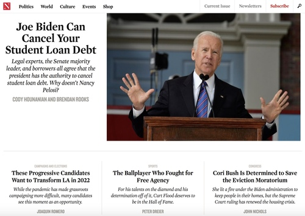

Brendan Rooks
I am a current fourth-year Political Science & Public Policy undergraduate student at the University of California, Riverside. I will be graduating in December 2021. At UCR I have served in different campus organizations such as ASUCR Lobby Corps, ASUCR Labor Commission, and The Roosevelt Network @ UC Riverside.
Outside of my acaademic involvements, I have held multiple jobs both on campus and off campus. I served as a research assistant at the Center for Social Innovation where I worked on the Inland Empire Roadmap for an Inclusive and Sustainable Economy. I have also worked as an organizing intern with AFSCME Local 3299, and as the Government Affairs Coordinator of Student Debt Crisis Center.
I hope to pursue a graduate education after I graduate from UCR. I am currently looking for Masters programs in Public Policy and International Development.
Experience
Government Affairs Coordinator
• Conduct legislative research & outreach with both state & federal legislatures
• Work with organizational partners to identify strategic goals in both the state & federal arenas
• Manage Twitter account of nearly 60,000 followers & develop shareable materials via Canva
• Plan & facilitate State of Student Debt Summit with Sens. Schumer & Warren & Rep. Pressley
Organizing Intern
• Plan, coordinate, publicize & run escalating actions such as pickets, rallies & other direct actions
• Foster student-labor relations through the development of a student-labor solidarity organization
Investigative Assistant
• Was responsible for Los Angeles County Policy of Equity investigations, such as maintaining communications with investigators & county officials, creating & distributing reports & invoicing
Education
University of California Riverside
Portfolio
.jpg)
.jpeg)


 